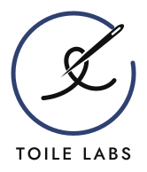

See trends early
Know which trends are worth acting on for your brand while there is still time to act on them well.

Toile Labs uses AI to help fashion brands keep up with what customers want, without overspending or losing the look that makes them who they are.
Know which trends are worth acting on for your brand while there is still time to act on them well.
Make trend decisions with more confidence and less trial and error, so budgets go to what will sell.
Every suggestion starts from what makes your brand recognisable, so you follow the market without looking like everyone else.
Acting earlier and more selectively means fewer rushed changes, fewer missed bets and less unsold stock. Better decisions are more sustainable ones.
We are experts in fashion, retail and consumer goods, with years of experience at Canadian retail companies.
We know how trend decisions get made inside a brand, and how costly the wrong ones are. Toile Labs is the tool we wanted to have.
Toile Labs is in development. If you design or buy for a fashion brand, we would like to hear from you.
admin@toilelabs.com